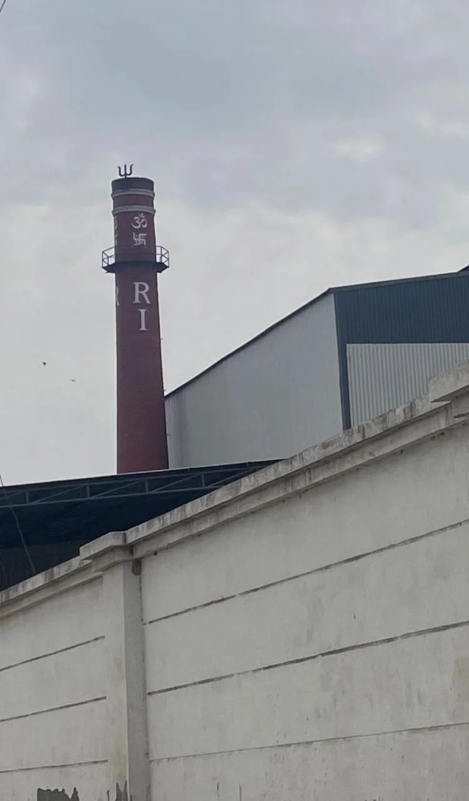

Understand the buyer
Market, channel, destination, volume and buying timeline shape the right product discussion.
We are a family-operated rice mill at Village Daha Madanpur, with three production units and a rice business history that began in 1978.
Our mill story
We began in 1978 and grew to three production units serving buyers in India and overseas. Our work covers procurement, processing, quality control, packaging and commercial coordination.
Our rice has reached buyers across more than 30 countries. Our approach remains practical: understand the buyer's market, match the right rice and processing style, then confirm the specification and terms before production.


Photographs from our Village Daha, Madanpur manufacturing campus.
Our rice
Explore our rice range, from paddy and raw grains to finished basmati and non-basmati products.


How we work
Market, channel, destination, volume and buying timeline shape the right product discussion.
Basmati, non-basmati, processing style and packaging are aligned with the intended use.
Specification, evidence, availability, price, packaging and dispatch are tied to the accepted order.
Send your product, volume, pack and destination so we can prepare the right quotation.